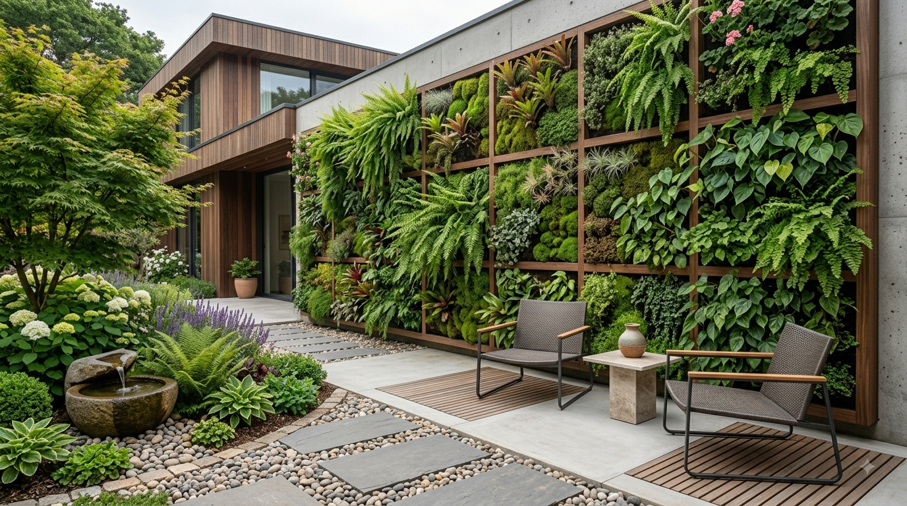

En este artículo
Evalúa el espacio disponible
Antes de elegir un árbol para un jardín doméstico conviene observar el espacio desde varios ángulos. No basta con medir el lugar donde se plantará: también hay que considerar la altura libre, la distancia hasta muros, ventanas, caminos, vallas y otras plantas. Un ejemplar que parece pequeño cuando se compra puede desarrollar una copa mucho más amplia con el paso de los años.
Medir el espacio disponible permite evitar una de las decisiones más frecuentes en jardinería: escoger una especie únicamente por su apariencia inicial. En un jardín pequeño, cada metro cuenta. La elección debe permitir que el árbol tenga suficiente espacio para crecer sin obligar a realizar podas constantes ni interferir con la circulación.
También es útil imaginar el árbol adulto y no solo su tamaño al momento de plantarlo. Una fotografía de un ejemplar maduro, la información del vivero y las dimensiones habituales de la especie ayudan a tomar una decisión más realista. Cuando existen dudas, es preferible elegir una variedad de crecimiento moderado y dejar margen alrededor de ella.
Considera el crecimiento futuro
El tamaño adulto es uno de los datos más importantes. Algunas especies crecen lentamente y mantienen una estructura compacta durante muchos años, mientras que otras aumentan de tamaño con rapidez. La velocidad de crecimiento también influye en el mantenimiento, porque una copa que se desarrolla rápidamente puede necesitar más atención para conservar una forma adecuada.
Conviene diferenciar entre altura, diámetro de la copa y desarrollo de las raíces. Un árbol puede no ser especialmente alto y, aun así, ocupar bastante espacio lateralmente. Por eso, al comparar opciones, hay que observar las tres dimensiones y comprobar las recomendaciones específicas para jardines pequeños.
Si el objetivo es crear sombra, intimidad o un punto focal, la elección debe responder a esa función. No todos los árboles pequeños ofrecen la misma densidad de follaje ni producen el mismo efecto visual. Pensar primero en la función ayuda a reducir las opciones y evita comprar una planta que resulte bonita pero poco adecuada para el lugar.
Elige una buena ubicación
La ubicación debe responder tanto a las necesidades del árbol como a la distribución del jardín. La cantidad de luz disponible, la dirección del sol, la protección frente al viento y la cercanía de estructuras pueden cambiar considerablemente las condiciones de cultivo.
Un árbol situado junto a una pared puede recibir menos luz en determinadas horas y disponer de una circulación de aire diferente a la de un ejemplar plantado en una zona abierta. Antes de plantar, observa el lugar durante el día y anota qué zonas reciben sol directo y cuáles permanecen en sombra.
También hay que pensar en el uso cotidiano del jardín. Evita colocar un árbol donde su futuro crecimiento bloquee una puerta, dificulte el paso o interfiera con una zona de descanso. Una buena ubicación permite que la planta se integre en el jardín en lugar de convertirse en un obstáculo.
Conoce las necesidades de la especie
Cada árbol tiene necesidades particulares de agua, luz, suelo y temperatura. Dos especies de tamaño parecido pueden comportarse de manera muy diferente en el mismo jardín. Por eso, antes de comprar, consulta las condiciones recomendadas y compáralas con las características reales de tu espacio.

La frecuencia de riego no debería decidirse únicamente por una rutina fija. El clima, la estación, el tipo de suelo y el tamaño del ejemplar influyen en la cantidad de agua necesaria. Observar la humedad del suelo y la respuesta de la planta ayuda a ajustar los cuidados.
El suelo también merece atención. Un terreno compacto o con drenaje deficiente puede crear problemas incluso cuando la especie elegida es adecuada para el clima. En esos casos, conviene mejorar las condiciones del terreno antes de plantar en lugar de intentar compensar posteriormente un problema estructural.
Prepara el suelo antes de plantar
Preparar el terreno facilita que las raíces se establezcan correctamente. Retirar piedras grandes, comprobar el drenaje y trabajar el suelo cuando sea necesario puede marcar una diferencia importante durante los primeros meses.
El hoyo de plantación debe permitir que las raíces se acomoden sin quedar comprimidas. No es recomendable tratar de solucionar un suelo inadecuado utilizando una cantidad excesiva de sustrato diferente sin analizar primero qué necesita realmente la planta.
Después de plantar, una capa adecuada de materia orgánica o acolchado puede ayudar a conservar la humedad y proteger el suelo. El acolchado debe colocarse sin cubrir directamente el tronco, dejando una pequeña separación para evitar acumulaciones innecesarias de humedad.
Planifica el mantenimiento
Un jardín doméstico funciona mejor cuando el mantenimiento es compatible con el tiempo disponible. Los árboles pequeños pueden ser una excelente opción, pero eso no significa que sean completamente libres de cuidados. La poda, la limpieza de hojas, la observación de plagas y el riego forman parte de su mantenimiento.
La poda debe tener un objetivo claro. Retirar ramas secas, dañadas o mal orientadas puede mejorar la estructura, pero podar continuamente para mantener un árbol dentro de un espacio demasiado reducido suele ser una señal de que la especie o la ubicación no fueron bien elegidas.
También es útil revisar el árbol después de periodos de calor, viento intenso o lluvias abundantes. Las revisiones periódicas permiten detectar cambios en las hojas, ramas dañadas o problemas de humedad antes de que se conviertan en situaciones más difíciles de controlar.
Utiliza el árbol como parte del diseño
Un árbol pequeño puede cumplir varias funciones dentro del jardín. Puede convertirse en un punto focal, aportar sombra ligera, acompañar una zona de descanso o ayudar a separar visualmente diferentes ambientes.

Para integrarlo con naturalidad, combina su forma y volumen con plantas de diferentes alturas. Las especies bajas pueden crear una transición alrededor del tronco, mientras que arbustos y plantas tapizantes ayudan a conectar el árbol con el resto del paisaje.
También puedes aprovechar los cambios estacionales. Algunas especies ofrecen flores en una época concreta, otras destacan por el color del follaje y algunas producen frutos ornamentales. Elegir según el efecto que deseas durante todo el año hace que el jardín resulte más interesante.
Evita errores habituales
Uno de los errores más comunes es elegir únicamente por la fotografía de la etiqueta. La imagen puede mostrar un ejemplar adulto en condiciones ideales, mientras que el jardín doméstico tiene limitaciones de espacio, luz o suelo.
Otro error consiste en ignorar las distancias de seguridad. Aunque el árbol sea pequeño, sus ramas y raíces necesitan espacio. Mantener una separación razonable respecto a paredes, tuberías, caminos y otras estructuras ayuda a prevenir problemas futuros.
También conviene evitar plantar demasiados ejemplares juntos para conseguir un efecto inmediato. El jardín cambia con el tiempo y las plantas necesitan espacio para desarrollarse. Una composición menos saturada al principio puede resultar mucho más equilibrada después de varios años.
Cómo elegir un ejemplar en el vivero
Al comprar un árbol, observa la planta completa y no solo la parte que más llama la atención. El tronco debe presentar un aspecto sano y la copa debe guardar una relación razonable con el recipiente. También conviene revisar las hojas y el sustrato para detectar señales visibles de estrés antes de llevar el ejemplar a casa.
Pregunta por el tamaño que puede alcanzar, el ritmo de crecimiento y las condiciones recomendadas. Si el vivero ofrece varias variedades de una misma especie, compara sus características en lugar de elegir únicamente por el precio o por el aspecto del ejemplar más pequeño.
Una compra bien planificada evita tener que sustituir el árbol después. En jardines pequeños, una diferencia aparentemente pequeña en el tamaño adulto puede cambiar por completo la relación entre la planta y el espacio disponible.
Piensa en el jardín durante todo el año
La apariencia de un árbol cambia con las estaciones. Antes de elegirlo, considera qué aspecto tendrá cuando florezca, cuando pierda hojas o cuando cambie el color de su follaje. Esto permite integrarlo en una composición que mantenga interés durante diferentes épocas.

También es útil pensar en la sombra que producirá en verano y en la cantidad de luz que dejará pasar en invierno si se trata de una especie caduca. Esa característica puede influir en la comodidad de una terraza, una ventana o una zona de descanso.
Un árbol pequeño bien elegido puede aportar mucho más que volumen. Puede ayudar a definir el carácter del jardín y convertirse en una referencia visual que conecte diferentes elementos del paisaje.
Respeta las distancias alrededor del árbol
Las distancias respecto a muros, caminos y otras plantas no son un detalle menor. Una separación adecuada permite que la copa se desarrolle, facilita la circulación del aire y deja espacio para realizar tareas de mantenimiento. También reduce la necesidad de podas correctivas cuando el árbol comienza a crecer.
Antes de plantar, observa no solo lo que está delante del árbol, sino también lo que existe debajo y detrás. Tuberías, instalaciones, pavimentos y estructuras pueden condicionar la ubicación. Si no puedes comprobar algún elemento, es mejor informarte antes de excavar.
Combina el árbol con plantas compatibles
La vegetación que rodea al árbol debe complementar su crecimiento y no competir de manera excesiva por espacio y recursos. Plantas de menor tamaño pueden crear una transición visual agradable, pero deben elegirse considerando la sombra que producirá el árbol cuando crezca.
Una composición sencilla suele ser más fácil de mantener. En lugar de llenar todo el espacio desde el primer día, deja zonas libres y permite que el jardín evolucione. Esto facilita realizar ajustes cuando conozcas mejor el comportamiento del árbol.
Da tiempo al árbol para adaptarse
Después de plantar, evita exigir resultados inmediatos. El establecimiento de un árbol puede requerir tiempo y la respuesta dependerá de la especie, la época y las condiciones del lugar. Durante esta etapa, mantener cuidados constantes y observar el suelo suele ser más útil que intervenir continuamente.
La paciencia también ayuda a evaluar si la ubicación funciona. Una planta puede necesitar una temporada para mostrar cómo responde a la luz y al riego. Si las condiciones son adecuadas, el crecimiento gradual terminará integrándola en el jardín.
Preguntas frecuentes
¿Qué tamaño debe tener un árbol para un jardín pequeño?
No existe una medida única. Lo importante es conocer la altura y el diámetro de la copa en la madurez y compararlos con el espacio disponible. También conviene considerar el desarrollo de las raíces y la distancia respecto a estructuras.
¿Es mejor elegir un árbol de crecimiento lento?
Puede ser una buena opción cuando el espacio es limitado, porque permite controlar mejor la evolución del jardín. Sin embargo, lo más importante es que la especie sea compatible con las condiciones de luz, suelo y clima del lugar.
¿Dónde conviene plantar un árbol pequeño?
En una zona donde reciba la luz que necesita, tenga espacio suficiente para crecer y no interfiera con caminos, ventanas, muros o instalaciones. Observar el lugar durante diferentes horas del día ayuda a tomar una decisión más precisa.
Conclusión
Elegir y organizar este recurso de manera consciente permite aprovechar mejor el espacio y reducir problemas de mantenimiento. La mejor solución no es necesariamente la más llamativa, sino la que se adapta a las condiciones reales de la vivienda y puede mantenerse con facilidad a lo largo del tiempo.
Antes de realizar cambios, observa el espacio, mide lo necesario y piensa en el uso cotidiano. Con una planificación sencilla es posible conseguir un resultado funcional, agradable y coherente con el resto de la casa.